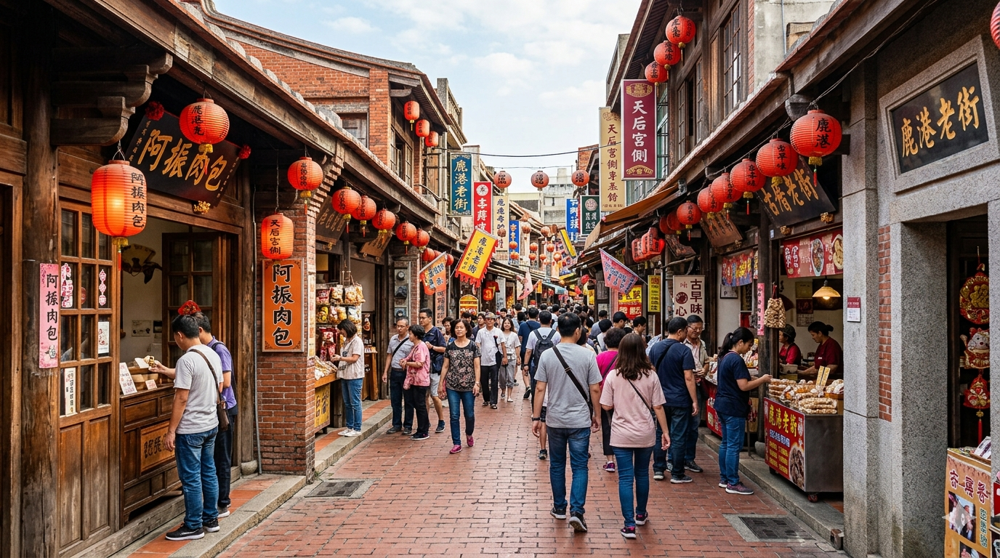
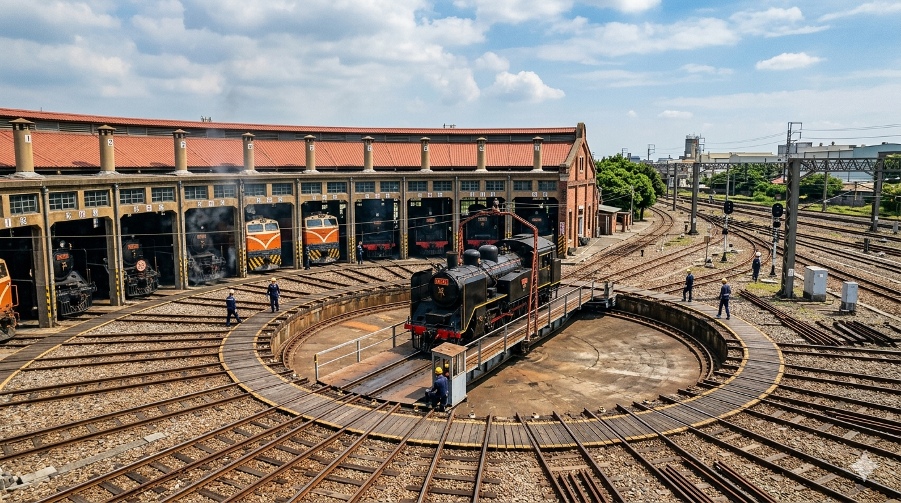

彰化市
彰化市作為早期的行政與交通樞紐，其旅遊核心圍繞著鐵道文化、佛教聖地與名冠全台的小吃老店。
鹿港老街位於彰化縣鹿港鎮
台灣保存最完整的清代閩南式建築古街。
這裡曾是「一府二鹿三艋舺」的繁華港口，紅磚巷弄間古色古香，必訪展現人情味的「半邊井」，以及防禦強風的「九曲巷」與信仰中心「天后宮」。在地美食更不容錯過，肥美鮮甜的蚵嗲、酥脆的炸蝦猴、傳統麵線糊與厚實的牛舌餅，是兼具歷史底蘊與舌尖饗宴的文化聖地。

九族文化村(位於台灣南投縣魚池鄉)
結合台灣原住民傳統文化、歐洲宮廷花園以及日月潭空中纜車而聞名）
樂園座落於一片蔥鬱的森林山谷之中，以結合台灣原住民傳統文化、歐洲宮廷花園、頂尖遊樂設施以及日月潭空中纜車而聞名。它不僅榮獲米其林綠色指南三星級推薦，更是日本櫻花協會唯一認證的海外賞櫻名所。

扇形車庫（位於彰化市）
目前是台灣唯一、亞洲唯二（另一座在日本京都）仍在運作的活古蹟，隸屬於國定古蹟。
12股軌道由中央轉車盤如扇子般放射展開，用來停放、維修列車，運氣好還能親眼目睹火車頭在轉盤上「華麗轉身」的調度震撼。
